Évolution directe du logo texte actuel. Lettres géométriques épaisses, point bleu accent. Signature type Stripe/Linear. Le choix safe.

Pur "K" géométrique, branche supérieure blanche, branche inférieure bleue. Idéal en favicon / avatar social / watermark. Style Vercel triangle.
Même base que A, arc bleu qui évoque la vitesse / trajectoire (hommage à Orbit Labs, cohérence écosystème). Plus narratif, plus risqué.